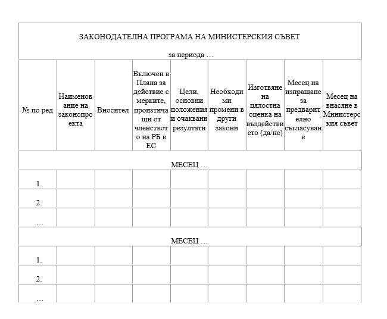
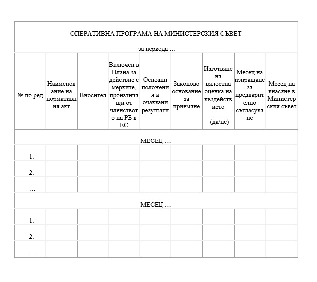
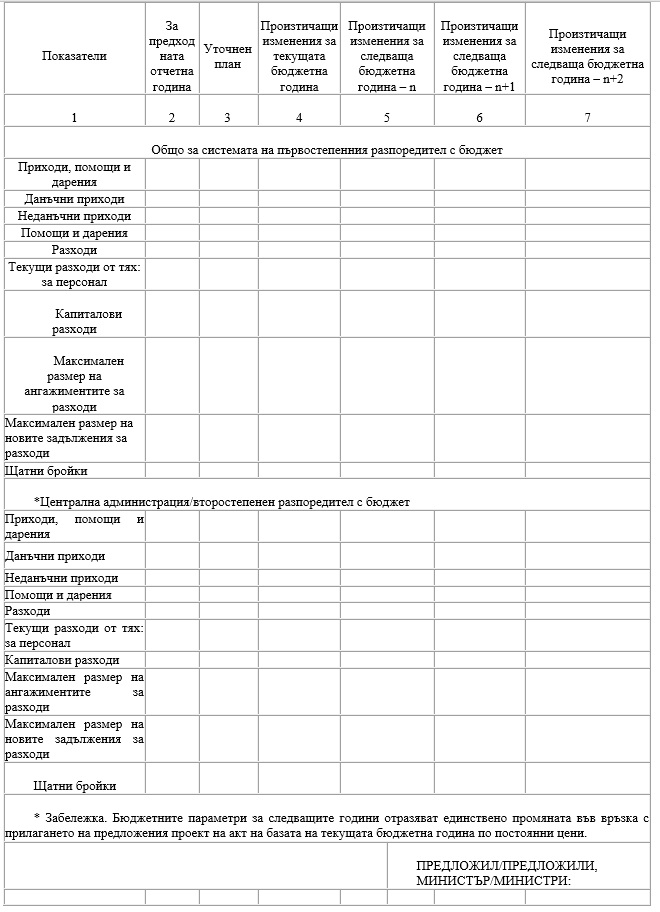
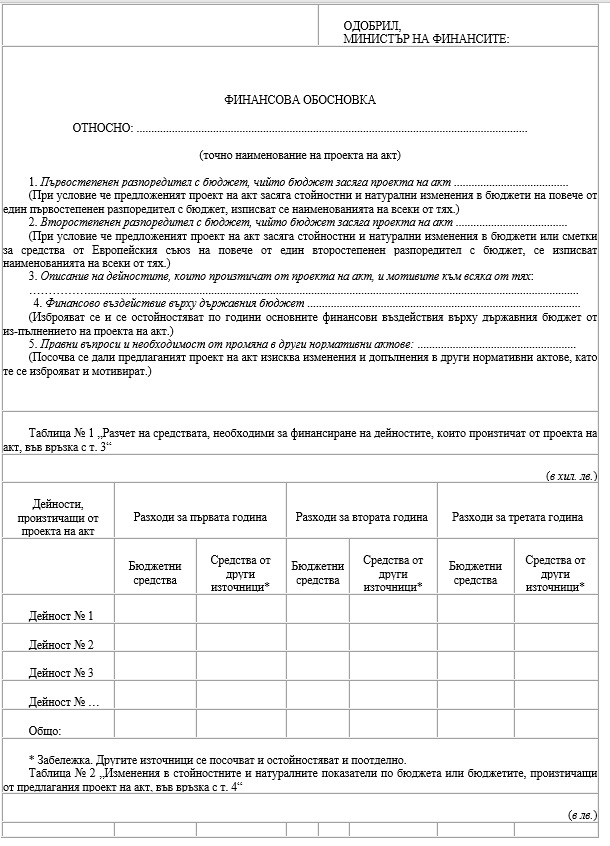
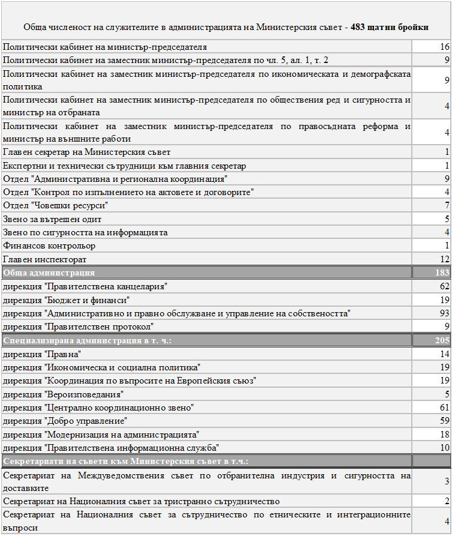

Приет с ПМС № 229 от 23.09.2009 г., обн., ДВ, бр. 78 от 2.10.2009 г., в сила от 2.10.2009 г., изм., бр. 102 от 22.12.2009 г., в сила от 1.01.2010 г., изм. и доп., бр. 15 от 23.02.2010 г., доп., бр. 25 от 30.03.2010 г., в сила от 30.03.2010 г., изм. и доп., бр. 30 от 20.04.2010 г., попр., бр. 32 от 27.04.2010 г., изм. и доп., бр. 74 от 21.09.2010 г., в сила от 21.09.2010 г., бр. 88 от 9.11.2010 г., бр. 15 от 18.02.2011 г., в сила от 18.02.2011 г., бр. 25 от 25.03.2011 г., изм., бр. 31 от 15.04.2011 г., в сила от 15.04.2011 г., изм. и доп., бр. 43 от 7.06.2011 г., в сила от 7.06.2011 г., изм., бр. 54 от 15.07.2011 г., в сила от 1.08.2011 г., бр. 80 от 14.10.2011 г., в сила от 14.10.2011 г., изм. и доп., бр. 22 от 16.03.2012 г., бр. 50 от 3.07.2012 г., бр. 103 от 28.12.2012 г., в сила от 28.12.2012 г., бр. 30 от 26.03.2013 г., в сила от 20.03.2013 г., бр. 51 от 11.06.2013 г., изм., бр. 69 от 6.08.2013 г., в сила от 6.08.2013 г., изм. и доп., бр. 70 от 9.08.2013 г., бр. 74 от 23.08.2013 г., доп., бр. 82 от 20.09.2013 г., в сила от 20.09.2013 г., изм., бр. 88 от 8.10.2013 г., изм. и доп., бр. 102 от 26.11.2013 г., бр. 8 от 28.01.2014 г., изм., бр. 49 от 13.06.2014 г., в сила от 13.06.2014 г., изм. и доп., бр. 58 от 15.07.2014 г., бр. 67 от 12.08.2014 г., бр. 76 от 12.09.2014 г., в сила от 12.09.2014 г., бр. 94 от 14.11.2014 г., в сила от 14.11.2014 г., изм., бр. 5 от 20.01.2015 г., в сила от 20.01.2015 г., бр. 19 от 13.03.2015 г., в сила от 13.03.2015 г., изм. и доп., бр. 37 от 22.05.2015 г., изм., бр. 57 от 28.07.2015 г., в сила от 28.07.2015 г., бр. 2 от 8.01.2016 г., в сила от 8.01.2016 г., изм. и доп., бр. 8 от 29.01.2016 г., бр. 49 от 28.06.2016 г., бр. 91 от 18.11.2016 г., в сила от 18.11.2016 г., бр. 12 от 3.02.2017 г., в сила от 3.02.2017 г., бр. 30 от 11.04.2017 г., в сила от 11.04.2017 г., бр. 39 от 16.05.2017 г., в сила от 16.05.2017 г., изм., бр. 45 от 6.06.2017 г., в сила от 1.06.2017 г., изм. и доп., бр. 63 от 4.08.2017 г., в сила от 4.08.2017 г., изм., бр. 68 от 22.08.2017 г., в сила от 22.08.2017 г., бр. 2 от 3.01.2018 г., в сила от 3.01.2018 г.
Глава първа
ОБЩИ РАЗПОРЕДБИ
Чл. 1. С правилника се уреждат основните въпроси, свързани с дейността и организацията на работа на Министерския съвет и със структурата и функциите на неговата администрация.
Чл. 2. (1) Министерският съвет е централен колегиален орган на изпълнителната власт с обща компетентност.
(2) Министерският съвет координира дейността на другите органи на изпълнителната власт за осъществяването на единна държавна политика.
(3) Министерският съвет осъществява дейността си въз основа на принципите на законност, публичност, колегиалност, централизация и координация при формирането и провеждането на политиките, на децентрализация на оперативните функции по осъществяване на изпълнителната власт и на взаимодействие и сътрудничество.
Чл. 3. (1) При осъществяване на своята дейност Министерският съвет взаимодейства с Народното събрание, президента, омбудсмана, Конституционния съд, органите на съдебната власт и другите държавни институции, невключени в системата на изпълнителната власт, както и с органите на местното самоуправление.
(2) Министерският съвет осъществява сътрудничество с ръководните органи на синдикатите, на организациите на работодателите и организациите за социална защита, както и на други неправителствени организации.
(3) Министерският съвет провежда единна информационна политика за дейността на правителството и на неговата администрация.
Чл. 4. (1) Текущата дейност на Министерския съвет и подготовката на неговите заседания се осигурява от администрацията на Министерския съвет.
(2) Администрацията на Министерския съвет се ръководи от министър-председателя.
(3) Главният секретар на Министерския съвет осигурява административното ръководство на администрацията на Министерския съвет.
(4) Администрацията на Министерския съвет като юридическо лице се представлява от министър-председателя или от овластени от него длъжностни лица.
Глава втора
МИНИСТЕРСКИ СЪВЕТ
Раздел I
Състав, функции и правомощия на Министерския съвет и на неговите членове
Чл. 5. (Доп. - ДВ, бр. 30 от 2010 г., изм., бр. 15 от 2011 г., в сила от 18.02.2011 г., бр. 30 от 2013 г., в сила от 20.03.2013 г., бр. 51 от 2013 г., бр. 74 от 2013 г., бр. 67 от 2014 г., бр. 94 от 2014 г., в сила от 14.11.2014 г., бр. 37 от 2015 г., бр. 49 от 2016 г., бр. 12 от 2017 г., в сила от 3.02.2017 г., бр. 39 от 2017 г., в сила от 16.05.2017 г.) (1) Министерският съвет се състои от:
(2) Заместник министър-председателите и министрите ръководят министерства с изключение на заместник министър-председателя по ал. 1, т. 2 и заместник министър-председателя по икономическата и демографската политика.
Чл. 6. (1) Министерският съвет ръководи и осъществява вътрешната и външната политика на Република България на основата на приета от него програма за управление на страната.
(2) Министерският съвет ръководи изпълнението на държавния бюджет и организира стопанисването на държавното имущество, осигурява обществения ред и националната сигурност и осъществява общото ръководство на държавната администрация, отбраната и въоръжените сили.
(3) Министерският съвет определя с приети от него стратегии и програми държавната структурна и инвестиционна политика, държавната политика: в областта на международното сътрудничество; за ограничаване на престъпността и противодействие на корупцията; в областта на здравеопазването, образованието, културата и опазването на околната среда; за намаляване на безработицата и насърчаване на заетостта; за развитие на администрацията, както и държавната политика в други сфери или направления на обществения живот, имащи значение за цялостното развитие на страната.
(4) Министерският съвет ръководи и осъществя политиката на Република България към Европейския съюз (ЕС) и Организацията на Северноатлантическия договор (НАТО).
Чл. 7. (1) В изпълнение на своите конституционни функции Министерският съвет разглежда въпроси, които са му изрично възложени със закон или следват от ръководното му място в системата на изпълнителната власт.
(2) Министерският съвет решава въпросите от своята компетентност на заседания.
(3) По изключение и по предложение на министър-председателя Министерският съвет може да приеме акт и неприсъствено. Ако някой от членовете на Министерския съвет поиска мотивирано проектът на акт да бъде обсъден от Министерския съвет, той се включва в дневния ред за следващото заседание.
Чл. 8. (1) Министерският съвет решава въпросите от своята компетентност, като приема постановления, разпореждания и решения.
(2) Министерският съвет с постановления приема правилници или наредби или урежда обществени отношения, които не подлежат на законова уредба, съобразно компетентността му, установена от Конституцията и законите.
(3) Министерският съвет приема решения или разпореждания по въпроси, които нямат нормативен характер.
(4) Министерският съвет с решение одобрява:
(5) В решенията по ал. 4, т. 1 се определя кой от членовете на Министерския съвет е отговорен за представянето на законопроекта в Народното събрание.
Чл. 9. (1) Приетите от Министерския съвет актове се подписват от министър-председателя. Министър-председателят подписва и мотивите към актовете по чл. 8, ал. 4, т. 1 и 2, както и становищата по конституционните дела.
(2) При неприсъственото приемане на акт той се представя за подпис на всички членове на Министерския съвет с изключение на командированите и ползващите законоустановен отпуск и се счита за приет, ако бъде подкрепен с "да" от повече от половината от тях.
(3) Приетите от Министерския съвет актове се подпечатват с официалния печат на Министерския съвет.
(4) Приети от Министерския съвет решения по оперативни и текущи въпроси могат да се оформят и в протокола от съответното заседание на правителството.
Чл. 10. (1) Министър-председателят ръководи общата политика на правителството и координира дейността на членовете на Министерския съвет по нейното осъществяване.
(2) Министър-председателят ръководи текущата дейност на Министерския съвет, като утвърждава дневния ред, свиква и председателства заседанията на правителството.
(3) Министър-председателят като централен едноличен орган на изпълнителната власт:
(4) При осъществяване на правомощията си по ал. 3 министър-председателят издава заповеди или подписва други официални документи, които се подпечатват с официалния печат на Министерския съвет. В останалите случаи заповедите на министър-председателя и неговата служебна кореспонденция се подпечатват със служебния печат на Министерския съвет.
Чл. 11. (1) (Изм. – ДВ, бр. 67 от 2014 г.) Заместник министър-председателите са централни еднолични органи на изпълнителната власт, които подпомагат министър-председателя при осъществяване координацията на политиката на правителството в определените им ресори.
(2) Правомощията на министър-председателя по чл. 10, ал. 2 в негово отсъствие от страната или когато ползва законоустановен отпуск, се изпълняват от определен от него за всеки конкретен случай с писмена заповед заместник министър-председател.
(3) (Нова - ДВ, бр. 51 от 2013 г., изм., бр. 67 от 2014 г., бр. 94 от 2014 г., в сила от 14.11.2014 г., бр. 12 от 2017 г., в сила от 3.02.2017 г., бр. 39 от 2017 г., в сила от 16.05.2017 г.) Заместник министър-председателят по чл. 5, ал. 1, т. 2 подпомага министър-председателя, като отговаря за цялостната организация и ръководство на системата за координация при управлението на средствата от Европейския съюз.
(4) (Нова - ДВ, бр. 51 от 2013 г., изм., бр. 67 от 2014 г., бр. 94 от 2014 г., в сила от 14.11.2014 г., бр. 37 от 2015 г., бр. 2 от 2016 г., в сила от 8.01.2016 г., бр. 12 от 2017 г., в сила от 3.02.2017 г., бр. 39 от 2017 г., в сила от 16.05.2017 г.) При осъществяване на своите функции по ал. 3 заместник министър-председателят по чл. 5, ал. 1, т. 2 се подпомага от дирекции "Централно координационно звено" и "Добро управление".
(5) (Нова – ДВ, бр. 94 от 2014 г., в сила от 14.11.2014 г., изм., бр. 37 от 2015 г., бр. 91 от 2016 г., в сила от 1.12.2016 г., отм., бр. 12 от 2017 г., в сила от 3.02.2017 г.).
(6) (Нова – ДВ, бр. 94 от 2014 г., в сила от 14.11.2014 г., доп., бр. 49 от 2016 г., изм., бр. 12 от 2017 г., в сила от 3.02.2017 г., отм., бр. 39 от 2017 г., в сила от 16.05.2017 г.).
(7) (Предишна ал. 3, изм. - ДВ, бр. 51 от 2013 г., предишна ал. 5, бр. 94 от 2014 г., в сила от 14.11.2014 г., бр. 12 от 2017 г., в сила от 3.02.2017 г., изм., бр. 39 от 2017 г., в сила от 16.05.2017 г.) При упражняване на функциите по ал. 1 и 3 заместник министър-председателите могат да издават заповеди. Заповедите и служебната кореспонденция на заместник министър-председателите се подпечатват със служебния печат на Министерския съвет.
Чл. 12. (1) Министрите са централни еднолични органи на изпълнителната власт със специална компетентност, които осъществяват държавната политика в ръководената от тях сфера на обществения живот в съответствие със законите и приетата от правителството програма за управление на страната.
(2) Министрите осъществяват общо ръководство и координация на дейността на създадените към тях държавни комисии, изпълнителни агенции и други административни структури.
(3) Министрите осъществяват координация на дейността на държавни агенции, държавни комисии и други административни структури към Министерския съвет, когато това им е възложено с акт на правителството или със заповед на министър-председателя.
(4) (Доп. - ДВ, бр. 30 от 2010 г., изм., бр. 15 от 2011 г., в сила от 18.02.2011 г., бр. 51 от 2013 г.) Функциите на министрите, които ръководят министерства, се определят с устройствените правилници на съответните министерства.
Чл. 13. (Отм. - ДВ, бр. 15 от 2011 г., в сила от 18.02.2011 г., нов, бр. 30 от 2013 г., в сила от 20.03.2013 г., отм., бр. 51 от 2013 г.).
Чл. 13а. (Нов - ДВ, бр. 30 от 2010 г., изм., бр. 30 от 2013 г., отм., бр. 51 от 2013 г.).
Чл. 14. (1) Министър-председателят, заместник министър-председателите и министрите представляват Република България в отношенията с други държави и международни организации, провеждат международни преговори и участват в други международни мероприятия в съответствие с Конституцията, законите на Република България и актовете на Министерския съвет.
(2) В случаите, когато министър предложи на Министерския съвет международен договор за утвърждаване или за ратифициране със закон от Народното събрание, той осигурява неговото обнародване в "Държавен вестник".
Раздел II
Политически кабинети на министър-председателя и на заместник министър-председателите
(Загл. изм. - ДВ, бр. 30 от 2010 г., бр. 15 от 2011 г., в сила от 18.02.2011 г., бр. 51 от 2013 г.)
Чл. 15. (1) Политическият кабинет на министър-председателя е организационна структура, която включва заместник министър-председателите, началника на кабинета, парламентарния секретар и ръководителя на звеното за връзки с обществеността.
(2) Политическият кабинет на министър-председателя подпомага министър-председателя при формулирането и разработването на конкретни решения за провеждане на правителствената политика в сферата на неговите правомощия, както и при представянето на правителствената политика пред обществото.
(3) В изпълнение на задачите си по ал. 2 политическият кабинет на министър-председателя има съвещателни, аналитични и информационни функции, в изпълнение на които:
Чл. 16. (1) Началникът на политическия кабинет на министър-председателя:
(2) Съветниците и експертите към политическия кабинет на министър-председателя:
(3) Техническите сътрудници към политическия кабинет на министър-председателя осигуряват подготовката и провеждането на заседанията на политическия кабинет.
Чл. 17. Парламентарният секретар на Министерския съвет:
Чл. 18. (1) Ръководителят на звеното за връзки с обществеността:
(2) (Отм. - ДВ, бр. 74 от 2013 г.).
(3) (Изм. - ДВ, бр. 74 от 2013 г., бр. 37 от 2015 г.) Ръководителят на звеното за връзки с обществеността е съветник към политическия кабинет на министър-председателя. При осъществяване на своите функции по ал. 1 той се подпомага от дирекция "Правителствена информационна служба".
Чл. 19. (Доп. - ДВ, бр. 30 от 2010 г., изм., бр. 15 от 2011 г., в сила от 18.02.2011 г., бр. 30 от 2013 г., в сила от 20.03.2013 г., бр. 51 от 2013 г.) (1) Заместник министър-председателите формират политически кабинети, включващи съветници, експерти и технически сътрудници.
(2) Началниците на политическите кабинети по ал. 1:
(3) Съветниците и експертите към политическите кабинети по ал. 1:
Чл. 20. (1) (Доп. - ДВ, бр. 30 от 2010 г., изм., бр. 15 от 2011 г., в сила от 18.02.2011 г., бр. 30 от 2013 г., в сила от 20.03.2013 г., бр. 51 от 2013 г.) Политическите кабинети си взаимодействат с администрацията на Министерския съвет при подпомагане дейността на министър-председателя и заместник министър-председателите.
(2) Взаимодействието по ал. 1 се осъществява чрез главния секретар. Конкретните задачи се формулират от началника на политическия кабинет и се възлагат на администрацията от главния секретар в обем и срокове, съгласувани между началника на кабинета и главния секретар.
Раздел III
Оперативна дейност на Министерския съвет
Чл. 21. (1) Министър-председателят свиква и ръководи оперативни съвещания по текущи въпроси от дейността на правителството, както и за определяне на подходи за подготовка на въпросите за разглеждане от Министерския съвет.
(2) В оперативните съвещания участват членовете на Министерския съвет, началникът на политическия кабинет на министър-председателя, главният секретар на Министерския съвет, както и други определени от министър-председателя лица.
(3) (Изм. – ДВ, бр. 58 от 2014 г.) Дневният ред на оперативните съвещания се определя от главния секретар.
Чл. 22. (1) Министерският съвет може да създава съвети във връзка с осъществяването на свои правомощия, произтичащи от нормативни актове или решения на Народното събрание.
(2) Съветите са постояннодействащи консултативни органи на правителството по определянето и провеждането на държавната политика в дадена област.
(3) Съветите се ръководят от министър-председателя или от друг член на правителството и включват в състава си само лица, които са избрани или назначени в органите на изпълнителната власт или са техни заместници.
(4) В акта за създаване на съвета се определя и администрацията, осигуряваща административното, експертното и техническото им подпомагане.
Чл. 23. (Отм. – ДВ, бр. 91 от 2016 г., в сила от 18.11.2016 г.).
Чл. 24. (1) Работни групи за изготвяне на проекти на актове или на други експертни предложения по конкретни въпроси от компетентността на правителството с участието на представители на различни администрации се създават с решение на Министерския съвет или със заповед на министър-председателя.
(2) В акта по ал. 1 се определя заместник министър-председател или министър, който да наблюдава дейността на работната група и да отговаря за резултатите от нейната работа пред правителството.
Раздел IV
Организационни въпроси
Чл. 25. (1) Официалният печат на Министерския съвет е с кръгла форма. В средата е изобразен гербът на Република България, около който е написано "Министерски съвет на Република България". Отпечатъкът от официалния печат е с червен цвят.
(2) Официалният печат е изработен в един екземпляр и се полага от главния секретар на Министерския съвет или от упълномощено от него длъжностно лице от администрацията на Министерския съвет върху актовете на правителството.
(3) За служебни цели се използва служебен печат, който е с кръгла форма с надпис в средата "Република България", около който е написано "Министерски съвет". Отпечатъкът от служебния печат е със син цвят.
(4) Служебният печат се полага от директора на дирекция "Правителствена канцелария" или от упълномощен от него служител върху преписите от актовете на Министерския съвет, върху актовете и служебната кореспонденция на министър-председателя и на заместник министър-председателите, както и върху служебната кореспонденция, подписана от главния секретар на Министерския съвет и от директорите в администрацията на Министерския съвет.
(5) Главният секретар на Министерския съвет утвърждава образците на официалния и служебния печат и определя реда за тяхното съхраняване.
Чл. 26. (1) При осъществяване на своите правомощия министър-председателят пътува в страната и в чужбина, без да се издава заповед за командироване. В тези случаи началникът на политическия кабинет на министър-председателя съставя паметна записка, която включва всички реквизити на заповед и отчет за командировка.
(2) По искане на президента във връзка с негови официални посещения в чужбина министър-председателят определя членовете на Министерския съвет, които да го придружават, и ги командирова.
(3) Заместник министър-председателите и министрите, органите към Министерския съвет по чл. 19, ал. 4 от Закона за администрацията, заместник-министрите и областните управители в изпълнение на своите правомощия пътуват в страната, без да се издава заповед за командироване. Тримесечните отчети за командировките се утвърждават от Министерския съвет.
(4) Заместник министър-председателите и министрите се командироват в чужбина със заповед на министър-председателя. Органите към Министерския съвет по чл. 19, ал. 4 от Закона за администрацията, областните управители и лицата, които се назначават със заповед на министър-председателя, се командироват в чужбина от министър-председателя или от упълномощено от него длъжностно лице.
(5) (Изм. - ДВ, бр. 102 от 2009 г., в сила от 1.01.2010 г.) Разходите за командировки на членовете на Министерския съвет са за сметка на бюджета на съответните ведомства.
Чл. 27. (1) Разходите за заплати на членовете на Министерския съвет са включени в бюджета на Министерския съвет.
(2) (Доп. - ДВ, бр. 30 от 2010 г., изм., бр. 15 от 2011 г., в сила от 18.02.2011 г., бр. 30 от 2013 г., в сила от 20.03.2013 г., бр. 51 от 2013 г.) Министър-председателят, заместник министър-председателите, началниците на политическите им кабинети и главният секретар на Министерския съвет имат право на разходи за представителни цели, които са предвидени по бюджета на Министерския съвет.
(3) Разходите за представителни цели на министрите се предвиждат по бюджета на съответното министерство.
Чл. 28. (1) Членовете на Министерския съвет ползват отпуските, предвидени в трудовото законодателство.
(2) Ползването на отпуск от заместник министър-председателите и министрите се разрешава от министър-председателя.
(3) За ползването на отпуск от министър-председателя се съставя паметна записка от началника на неговия политически кабинет, която включва всички реквизити на заповедта за разрешаване на съответния вид отпуск.
Чл. 29. (Доп. - ДВ, бр. 30 от 2010 г., изм., бр. 15 от 2011 г., в сила от 18.02.2011 г., бр. 30 от 2013 г., в сила от 20.03.2013 г., бр. 51 от 2013 г.) Процесуалното представителство по спорове, по които страна е Министерският съвет или неговата администрация, министър-председателят или заместник министър-председател в това му качество, се осъществява от лица, определени от министър-председателя.
Глава трета
ОРГАНИЗАЦИЯ НА РАБОТАТА НА МИНИСТЕРСКИЯ СЪВЕТ
Раздел I
Законодателна и оперативна програма на Министерския съвет
(Загл. доп. - ДВ, бр. 74 от 2013 г., изм., бр. 67 от 2014 г., бр. 91 от 2016 г., в сила от 18.11.2016 г.)
Чл. 30. (1) (Доп. – ДВ, бр. 91 от 2016 г., в сила от 18.11.2016 г.) Министерският съвет упражнява правото си на законодателна инициатива съобразно приетата от него шестмесечна законодателна програма.
(2) Със законодателната програма се определят законопроектите, които Министерският съвет предлага на Народното събрание за разглеждане и приемане през съответната негова сесия.
(3) Предложенията за включване на законопроект в законодателната програма се правят от членовете на Министерския съвет. Органите по чл. 19, ал. 3 и 4 от Закона за администрацията отправят своите предложения за включване на законопроект в законодателната програма чрез съответния заместник министър-председател или министър, определен по реда на чл. 11, ал. 1 и чл. 12, ал. 2 и 3.
(4) Предложението за включване на законопроект в законодателната програма трябва да съдържа:
(5) Предложенията се представят на парламентарния секретар на Министерския съвет чрез началника на политическия кабинет на министър-председателя за съставяне на проекта на законодателната програма.
(6) (Нова – ДВ, бр. 91 от 2016 г., в сила от 18.11.2016 г.) Законодателната програма се изготвя съгласно приложение № 1 въз основа на предложенията по ал. 4 и на становището на дирекция "Координация по въпросите на Европейския съюз" относно актовете, които въвеждат мерки на национално ниво, необходими за изпълнение и прилагане на актове на Европейския съюз. Програмата се публикува на Портала за обществени консултации заедно с оценките по чл. 30б.
Чл. 30а. (Нов - ДВ, бр. 74 от 2013 г., отм., бр. 67 от 2014 г., нов, бр. 91 от 2016 г., в сила от 18.11.2016 г.) (1) Министерският съвет приема подзаконови нормативни актове съгласно приета от него шестмесечна оперативна програма.
(2) Предложенията за включване на проект на подзаконов нормативен акт в оперативната програма се правят от членовете на Министерския съвет. Органите по чл. 19, ал. 3 и 4 от Закона за администрацията отправят своите предложения за включване на проект на подзаконов нормативен акт в оперативната програма чрез съответния заместник министър-председател или министър, определен по реда на чл. 11, ал. 1 и чл. 12, ал. 2 и 3.
(3) Предложението за включване на проект на нормативен акт в оперативната програма трябва да съдържа:
(4) Предложенията се представят на главния секретар на Министерския съвет за съставяне на проекта на оперативна програма.
(5) Оперативната програма се изготвя съгласно приложение № 1а и се публикува на Портала за обществени консултации заедно с оценките по чл. 30б.
Чл. 30б. (Нов - ДВ, бр. 74 от 2013 г., отм., бр. 67 от 2014 г., нов, бр. 91 от 2016 г., в сила от 18.11.2016 г.) (1) Вносителят изпраща по електронен път извършената частична предварителна оценка на въздействието за съгласуване от дирекция "Модернизация на администрацията" в срок до 30 дни преди началото на шестмесечния период на действие на законодателната, съответно на оперативната програма на Министерския съвет.
(2) Дирекция "Модернизация на администрацията" в срок 14 дни от получаването съгласува по електронен път оценката по ал. 1, като следи за нейното качество и за пълнота съгласно Наредбата за обхвата и методологията за извършване на оценка на въздействието (НОМИОВ) и се произнася по преценката относно необходимостта от извършване на цялостна оценка на въздействието. Когато с проекта на нормативен акт единствено се въвеждат мерки на национално ниво, необходими за изпълнение и прилагане на актове на Европейския съюз, срокът за съгласуване е 7 дни.
(3) При съгласуването по ал. 2 дирекция "Модернизация на администрацията" изготвя становище, в което:
а) отправя препоръки за допълване, подобряване на нейното качество, и/или
б) отправя препоръка за извършването на цялостна оценка на въздействието.
(4) След съгласуването вносителят съобразява частичната оценка със становището по ал. 3, т. 2 и предлага включването на проекта на нормативен акт в законодателната, съответно в оперативната програма на Министерския съвет.
(5) Когато в срока по ал. 2 не е получено становище на дирекция "Модернизация на администрацията", се счита, че частичната оценка на въздействието е съгласувана без препоръки.
Чл. 30в. (Нов - ДВ, бр. 74 от 2013 г., отм., бр. 67 от 2014 г., нов, бр. 91 от 2016 г., в сила от 18.11.2016 г.) (1) Вносителят изпраща по електронен път извършената цялостна предварителна оценка на въздействието за съгласуване от дирекция "Модернизация на администрацията" преди започването на междуведомствената съгласувателна процедура по чл. 32 – 34.
(2) Дирекция "Модернизация на администрацията" в срок 7 дни от получаването съгласува по електронен път оценката по ал. 1, като следи за нейното качество и пълнота съгласно НОМИОВ. Когато с проекта на нормативен акт единствено се въвеждат мерки на национално ниво, необходими за изпълнение и прилагане на актове на Европейския съюз, вносителят може да посочи по-кратък срок за съгласуване, но не по-малко от 3 дни.
(3) При съгласуването по ал. 2 дирекция "Модернизация на администрацията" изготвя становище, в което:
(4) Дирекция "Модернизация на администрацията" може да не съгласува цялостната оценка на въздействието два пъти, като повторното съгласуване се извършва в сроковете по ал. 2.
(5) След съгласуване без препоръки или след повторното съгласуване от дирекция "Модернизация на администрацията" вносителят започва съгласувателната процедура по чл. 32 – 34.
Чл. 30г. (Нов – ДВ, бр. 91 от 2016 г., в сила от 18.11.2016 г.) (1) За проектите на нормативни актове, които не са включени в законодателната и в оперативната програма на Министерския съвет, се прилагат чл. 30б и 30в.
(2) В случаите по ал. 1 дирекция "Модернизация на администрацията" извършва съгласуването на оценките в срок 7 дни от получаването им. Когато с проекта на нормативен акт единствено се въвеждат мерки на национално ниво, необходими за изпълнение и прилагане на актове на Европейския съюз, вносителят може да посочи по-кратък срок за съгласуване, но не по-малко от 3 дни.
Раздел II
Подготовка, съгласуване и внасяне на проекти на актове за разглеждане на заседание на Министерския съвет
Чл. 31. (1) Министрите и органите по чл. 19, ал. 4 от Закона за администрацията отговарят за подготовката на проектите на актове от компетентността на правителството в ръководените от тях ресори, освен ако в закон е предвидено друго.
(2) Въпросите за разглеждане на заседание се внасят от членовете на Министерския съвет самостоятелно или съвместно, когато са от функционалната компетентност на повече министри.
(3) Органите по чл. 19, ал. 3 и 4 от Закона за администрацията внасят подготвените от тях проекти на актове чрез съответния заместник министър-председател или министър, определен по реда на чл. 11, ал. 1 и чл. 12, ал. 2 и 3.
(4) (Доп. - ДВ, бр. 50 от 2012 г., отм., бр. 74 от 2013 г.).
Чл. 32. (1) Членовете на Министерския съвет съгласуват въпросите, на които те са вносители, с останалите министри.
(2) Вносителите съгласуват с президента проектите на актове, съдържащи предложения за издаване на укази.
(3) Вносителите съгласуват с органите по чл. 19, ал. 4 от Закона за администрацията, с областните управители или с други държавни органи въпросите, които са свързани или засягат тяхната дейност.
(4) В случаите, предвидени в нормативен акт, проектите на стратегически документи и на нормативни актове се съгласуват със съответните консултативни органи.
(5) Вносителите съгласуват проектите на актове с дирекция "Правна" и с другите дирекции от специализираната администрация на Министерския съвет съобразно функционалната им компетентност.
(6) (Нова – ДВ, бр. 102 от 2013 г.) Вносителите изпращат всеки законопроект за съгласуване от Центъра за превенция и противодействие на корупцията и организираната престъпност към Министерския съвет съобразно функционалната му компетентност.
(7) (Нова – ДВ, бр. 63 от 2017 г., в сила от 4.08.2017 г.) Когато при съгласуването на проект на нормативен акт или при обществените консултации по Закона за нормативните актове е получено становище, с което се възразява срещу разпоредби, за които е установено, че ще имат ефект върху регулаторната тежест за бизнеса, проектът се внася за разглеждане от Министерския съвет след получаване на становище от Регулаторния борд към Съвета за административната реформа.
Чл. 33. (1) По представените за съгласуване проекти на актове министрите изразяват становище относно съответствието им с програмата на правителството за управление на страната и с определената по реда на чл. 6, ал. 3 държавна политика в ръководената или координираната от тях сфера на обществения живот.
(2) Становищата на министрите по проектите на стратегии и програми, както и становищата по ал. 1 се подготвят от техните политически кабинети.
(3) (Доп. - ДВ, бр. 25 от 2010 г., в сила от 30.03.2010 г., изм., бр. 70 от 2013 г., бр. 57 от 2015 г., в сила от 28.07.2015 г.) Министрите могат да възлагат на ръководената от тях администрация изготвяне на експертно становище по представените за предварително съгласуване проекти на актове, които са свързани или засягат дейността на тяхното министерство. Експертните становища се подписват от главния секретар на министерството, за Министерството на отбраната - от постоянния секретар на отбраната, а за Министерството на вътрешните работи - от административния секретар.
Чл. 34. (1) (Изм. – ДВ, бр. 102 от 2013 г., бр. 91 от 2016 г., в сила от 18.11.2016 г.) Съгласуването по чл. 32, ал. 1, 3, 5 и 6 и чл. 33 се извършва в 14-дневен срок от получаването на материалите в съответната администрация – за проектите на нормативни актове, а за останалите актове – в 10-дневен срок.
(2) Материалите се считат за съгласувани без бележки, когато в срока по ал. 1 не е получено становище.
(3) В случаите, когато въз основа на получените становища вносителят измени съществено представения за съгласуване проект на акт или подготви нов проект, той е длъжен да го изпрати за повторно съгласуване заедно със справка по тези становища преди внасянето му за разглеждане на заседание на Министерския съвет.
(4) Предварителното съгласуване може да се извърши и по електронен път при условия и по ред, определени от главния секретар.
(5) Съгласуването на материалите се извършва по реда на чл. 32 и 33, доколкото не е предвиден друго в нормативен акт.
Чл. 35. (1) (Доп. - ДВ, бр. 25 от 2010 г., в сила от 30.03.2010 г., бр. 70 от 2013 г., изм., бр. 57 от 2015 г., в сила от 28.07.2015 г.) Въпросите за разглеждане от Министерския съвет се внасят с придружително писмо, подписано от съответния главен секретар, за Министерството на отбраната - от постоянния секретар на отбраната, за Министерството на вътрешните работи - от административния секретар, а за Министерството на външните работи - от постоянния секретар, и:
а) (доп. - ДВ, бр. 8 от 2014 г., бр. 91 от 2016 г., в сила от 18.11.2016 г.) за актове, които оказват пряко и/или косвено въздействие върху държавния бюджет в текущата и/или в следващите 3 години, съгласно приложение № 2.1; приложението се попълва и когато проектът на акт засяга взаимоотношения с централния бюджет на сметки за средствата от Европейския съюз;
б) за актове, които не оказват пряко и/или косвено въздействие върху държавния бюджет, съгласно приложение № 2.2;
(2) (Изм. - ДВ, бр. 88 от 2010 г.) В доклада по ал. 1, т. 1 задължително се посочват:
(3) (Доп. - ДВ, бр. 50 от 2012 г., изм., бр. 91 от 2016 г., в сила от 18.11.2016 г.) В справката за съответствие с европейското право се посочват актовете на Европейския съюз, с които е направена хармонизация на регламентираната материя, а в справката за отразяване на становищата - и предложенията и становищата, постъпили по реда на чл. 26, ал. 2 – 4 от Закона за нормативните актове.
(4) (Изм. - ДВ, бр. 74 от 2013 г., бр. 91 от 2016 г., в сила от 18.11.2016 г., бр. 63 от 2017 г., в сила от 4.08.2017 г.) Материалите по ал. 1, т. 2, 5, 6, 8, 9 и 10 се представят и на електронен носител.
(5) (Нова – ДВ, бр. 102 от 2013 г.) Финансовите обосновки за проекта на решение за одобряване проекта на закон за държавния бюджет, проекта на постановление за изпълнението на държавния бюджет и проектите на актове на Министерския съвет за одобряване на бюджетната прогноза и процедура се разработват съгласно приложение № 2.2.
Чл. 36. (1) (Изм. – ДВ, бр. 58 от 2014 г.) Материалите за разглеждане от Министерския съвет се внасят в администрацията на Министерския съвет не по-късно от 3 работни дни преди редовното заседание на Министерския съвет.
(2) В случаите, когато не са спазени изискванията на чл. 35, главният секретар на Министерския съвет връща материалите на вносителя с указания за отстраняване на нередовността.
(3) В случаите, когато не е спазен срокът по ал. 1, но материалите отговарят на изискванията на чл. 35, те се включват в дневния ред за следващото заседание.
(4) По изключение материали, които не отговарят на някои от изискванията на чл. 35 и на ал. 1, се включват в дневния ред по решение на министър-председателя след доклад на главния секретар.
(6) (Нова – ДВ, бр. 102 от 2013 г.) По изключение и по решение на министър-председателя материали, макар и да отговарят на изискванията на чл. 35, може да не бъдат включени в дневния ред и да бъдат върнати на вносителя.
Чл. 37. Съгласуването и внасянето на материали за заседание на Министерския съвет, в които се съдържа класифицирана информация с ниво на класификация за сигурност "строго секретно", "секретно" или "поверително", се извършват по реда на този раздел при спазване изискванията на Закона за защита на класифицираната информация и на актовете по неговото прилагане.
Раздел III
Подготовка на заседанията на Министерския съвет
Чл. 38. (1) Министерският съвет провежда редовни заседания въз основа на предварително утвърден от министър-председателя дневен ред.
(2) В дневния ред за всяко предстоящо заседание се включват внесените в сроковете по чл. 36 материали, като те се обособяват в две части:
(3) (Изм. – ДВ, бр. 58 от 2014 г.) Проектът на дневния ред се изготвя от главния секретар и се утвърждава от министър-председателя най-късно 2 дни преди заседанието, за което се отнася.
(4) Министър-председателят може да утвърди включването на допълнителен материал в дневния ред въз основа на мотивирано искане на вносителя относно необходимостта от неговото разглеждане на предстоящото заседание.
(5) Вносителите не могат да предлагат промени в представените проекти на актовете след включването на материала в дневния ред.
(6) Дневният ред за извънредните заседания се определя от министър-председателя.
Чл. 39. (1) Дневният ред с материалите по него се изпраща на членовете на правителството в еднодневен срок след утвърждаването му, съответно след включването на допълнителния материал в него. Членовете на Министерския съвет могат да представят становище по материалите най-късно до деня преди заседанието.
(2) Главният секретар разпределя материалите, включени в дневния ред, между дирекциите в администрацията на Министерския съвет, които най-късно до деня преди заседанието могат да представят експертни становища по тях.
Чл. 40. Материалите, в които се съдържа класифицирана информация с ниво на класификация за сигурност "строго секретно", "секретно" или "поверително", се обособяват в отделна част на дневния ред и се изпращат само на членовете на Министерския съвет при спазване изискванията на Закона за защита на класифицираната информация и на актовете по прилагането му.
Раздел IV
Заседания на Министерския съвет
Чл. 41. (1) Министерският съвет провежда заседания всяка седмица в определените със заповед на министър-председателя дни и часове.
(2) Министър-председателят може да разпореди промяна в графика на редовните заседания, както и да свиква извънредни заседания, за което членовете на правителството се уведомяват своевременно от главния секретар на Министерския съвет.
Чл. 42. (1) Заседанията на Министерския съвет се провеждат, ако на тях присъстват повече от половината от членовете на правителството.
(2) По изключение и след съгласуване с министър-председателя министрите могат да бъдат представени на заседанията на Министерския съвет от свои заместници. Заместник-министрите не участват при определянето на кворума и в гласуването на актовете.
(3) Заседанията на Министерския съвет се председателстват от министър-председателя, а в негово отсъствие - от определен от него по реда на чл. 11, ал. 2 заместник министър-председател.
Чл. 43. (1) (Изм. – ДВ, бр. 67 от 2014 г.) На заседанията на Министерския съвет присъстват началникът на политическия кабинет на министър-председателя, главният секретар на Министерския съвет, парламентарният секретар, ръководителят на звеното за връзки с обществеността и определени от министър-председателя директори на дирекции от администрацията на Министерския съвет, както и стенограф.
(2) На заседание на Министерския съвет или при разглеждането на отделна точка от неговия дневен ред могат да присъстват и поканени от министър-председателя лица в качеството им на представители на държавни институции или други организации.
(3) По искане на вносителя министър-председателят може да разреши присъствие на заместник-министри или на отделни служители от съответната администрация при разглеждане на определена точка от дневния ред.
(4) При обсъждането на въпроси от дневния ред, в материалите по които се съдържа класифицирана информация с ниво на класификация за сигурност "строго секретно", "секретно" или "поверително", присъстват само лица, които имат съответно разрешен достъп за работа с класифицирана информация.
(5) По решение на Министерския съвет отделни въпроси от дневния ред могат да се разглеждат само от неговите членове.
Чл. 44. (1) В началото на заседанието на Министерския съвет министър-председателят обявява дневния ред.
(2) Всеки вносител може да оттегли или да поиска отлагане на внесения от него за разглеждане въпрос, като изложи мотивите за това.
(3) Разглеждането на включените в дневния ред проекти на стратегии, програми и законопроекти се отлагат за следващо заседание на Министерския съвет при отсъствие на техния вносител.
(4) По изключение членовете на правителството могат да предлагат включването на допълнителни въпроси в дневния ред, ако писмено обосноват неотложността от тяхното разглеждане и представят проект на акт.
Чл. 45. (1) Обсъждането на всяка точка от част Б на дневния ред започва с изложение на вносителя, в което той накратко представя проекта и отговаря на получените принципни бележки по него, след което думата се дава на членовете на Министерския съвет, които желаят да се изкажат по разглеждания въпрос. Ако прецени за необходимо, министър-председателят може да включи в дискусията и други присъстващи на заседанието лица.
(2) Актовете на Министерския съвет се приемат с общо съгласие. По решение на министър-председателя може да бъде проведено гласуване по определен въпрос, като в този случай актът се приема с обикновено мнозинство от присъстващите членове на Министерския съвет.
Чл. 46. (1) За всяко проведено от Министерския съвет заседание се изготвя протокол, в който се вписват разгледаните на него въпроси и приетите по тях актове и протоколни решения. В протокола се вписват и участвалите в заседанието членове на Министерския съвет, както и другите присъствали на него външни лица.
(2) Приетите неприсъствено от Министерския съвет актове се вписват в протокола от първото след тяхното приемане заседание.
(3) Протоколът от заседанието се оформя от главния секретар, подпомогнат от определени от него служители от администрацията на Министерския съвет, и се подписва от министър-председателя най-късно на другия ден след провеждането на заседанието, за което се отнася.
(4) Стенографският протокол се подписва от присъствалия на заседанието стенограф и се прилага към протокола от заседанието.
(5) Препис на протокола от заседанието на Министерския съвет се изпраща на членовете на Министерския съвет.
Раздел V
Оформяне на актовете на Министерския съвет
Чл. 47. (1) Главният секретар на Министерския съвет организира дейността на администрацията на Министерския съвет и координира работата на вносителите за окончателното оформяне на приетите актове съобразно направените в заседанието изменения, допълнения и уточнения и за точното им правно и езиково редактиране.
(2) Окончателното оформяне на актовете се извършва от определената от главния секретар дирекция от администрацията на Министерския съвет в 5- дневен срок от приемането им, съответно от получаването на окончателния акт по реда на чл. 48, ал. 2.
Чл. 48. (1) Когато актът е приет със съществени или многобройни изменения, допълнения и уточнения по представения проект, окончателното му оформяне се извършва от неговия вносител.
(2) Окончателният акт се изпраща до главния секретар на Министерския съвет в 10-дневен срок от приемането му на заседание. Към окончателния законопроект се прилагат и преработени мотиви съобразно направените в него изменения и допълнения. Окончателният акт и мотивите се предоставят и на електронен носител.
(3) Въз основа на справка, подписана от съответния директор по чл. 47, ал. 2, министър-председателят може да разпореди окончателен акт, който не е съобразен с приети от вносителя на заседанието бележки, да бъде върнат на вносителя за тяхното отразяване или въпросът да бъде включен за повторно обсъждане на заседание на Министерския съвет.
(4) Когато вносителят не е представил в срок окончателния акт, главният секретар уведомява за това министър-председателя, който може да внесе в Министерския съвет предложение за отменяне на неговото приемане.
Чл. 49. (1) Преди да бъдат представени за подпис от министър-председателя, актовете се парафират в следната поредност: редактор-стилист, служителят, изготвил окончателното оформяне на акта, директорът на дирекцията по чл. 47, ал. 2, директорът на дирекция "Правна" и главният секретар на Министерския съвет.
(2) След подписването на акта от министър-председателя в него могат да се правят само технически поправки, които се парафират от главния секретар на Министерския съвет.
Чл. 50. (1) Актовете по чл. 8, ал. 4 се изпращат съответно до Народното събрание, президента и Конституционния съд с придружително писмо, подписано от министър-председателя.
(2) Подлежащите на обнародване актове се изпращат в "Държавен вестник" по установения в Закона за "Държавен вестник" ред, като придружителното писмо се подписва от министър-председателя или от определен от него директор на дирекция от администрацията на Министерския съвет.
Чл. 51. При поискване в законоустановените случаи се предоставят преписи от актове на Министерския съвет, изготвени от служители от неговата администрация и подпечатани със служебния печат на Министерския съвет.
Глава четвърта
СТРУКТУРА И ФУНКЦИИ НА АДМИНИСТРАЦИЯТА НА МИНИСТЕРСКИЯ СЪВЕТ
Раздел I
Общи положения
Чл. 52. (1) При изпълнение на своите правомощия Министерският съвет се подпомага от администрацията на Министерския съвет.
(2) Администрацията на Министерския съвет осъществява и координация на дейността на централната и териториалната администрация на изпълнителната власт.
Чл. 53. (1) (Изм. - ДВ, бр. 74 от 2013 г.) Администрацията на Министерския съвет е организирана в дирекции на общата администрация и в дирекции на специализираната администрация, както и в други административни звена и отделни длъжности съгласно приложение № 3.
(2) Министър-председателят по предложение на главния секретар може да създава отдели и сектори в дирекциите.
Чл. 54. (1) (Изм. - ДВ, бр. 74 от 2013 г.) Общата численост на служителите в администрацията на Министерския съвет и нейното разпределение по административни звена са посочени в приложение № 3.
(2) Длъжностното разписание на администрацията на Министерския съвет се утвърждава от министър-председателя по предложение на главния секретар.
Чл. 55. Служебната кореспонденция на администрацията на Министерския съвет се подписва от главния секретар или от директор на дирекция и се подпечатва със служебния печат на Министерския съвет.
Раздел II
Главен секретар
Чл. 56. Административното ръководство на администрацията на Министерския съвет се осъществява от главния секретар.
Чл. 57. (1) Главният секретар на Министерския съвет:
(2) Главният секретар определя:
Чл. 58. (1) (Изм. - ДВ, бр. 8 от 2014 г.) Главният секретар в случаите на упълномощаване се разпорежда и контролира движението на средствата по бюджетите и техните партиди в левове и във валута.
(2) Главният секретар в случаите на упълномощаване сключва договори от името на администрацията на Министерския съвет.
Чл. 59. (Доп. - ДВ, бр. 15 от 2010 г., изм. и доп., бр. 15 от 2011 г., в сила от 18.02.2011 г., бр. 43 от 2011 г., в сила от 7.06.2011 г., изм., бр. 50 от 2012 г., бр. 74 от 2013 г.) (1) Самостоятелни отдели към главния секретар са:
(2) Отдел "Административна и регионална координация":
а) (изм. – ДВ, бр. 8 от 2016 г.) Интегрираната информационна система на държавната администрация;
б) (отм. – ДВ, бр. 8 от 2016 г.);
в) Единната информационна система за управление на човешките ресурси;
(3) Отдел "Човешки ресурси":
(4) Отдел "Контрол по изпълнението на актовете и договорите" подпомага главния секретар:
(5) (Нова – ДВ, бр. 37 от 2015 г., отм., бр. 91 от 2016 г., в сила от 1.12.2016 г.).
(6) (Нова – ДВ, бр. 37 от 2015 г., отм., бр. 91 от 2016 г., в сила от 1.12.2016 г.).
(7) (Нова – ДВ, бр. 37 от 2015 г., изм., бр. 2 от 2016 г., в сила от 8.01.2016 г., отм., бр. 91 от 2016 г., в сила от 1.12.2016 г.).
Чл. 60. При отсъствие на главния секретар на Министерския съвет от страната или когато той ползва законоустановен отпуск, за всеки конкретен случай неговите функции се изпълняват от определен от министър-председателя директор на дирекция от администрацията на Министерския съвет.
Раздел III
Звено за вътрешен одит
Чл. 61. (1) Звеното за вътрешен одит е на пряко подчинение на министър-председателя и осъществява вътрешен одит по Закона за вътрешния одит в публичния сектор.
(2) (Изм. - ДВ, бр. 8 от 2014 г.) Звеното по ал. 1 осъществява дейността по вътрешен одит на всички структури, програми, дейности и процеси в администрацията на Министерския съвет и на разпоредителите с бюджет от по-ниска степен в съответствие с чл. 13 от Закона за вътрешния одит в публичния сектор.
(3) Звеното по ал. 1 докладва директно на министър-председателя.
(4) Звеното по ал. 1:
Раздел IV
Главен инспекторат
(Загл. изм. - ДВ, бр. 74 от 2013 г.)
Чл. 62. (1) (Изм. - ДВ, бр. 74 от 2013 г.) Главният инспекторат е на пряко подчинение на министър-председателя.
(2) (Изм. - ДВ, бр. 15 от 2010 г., бр. 74 от 2013 г.) Главният инспекторат:
(3) (Изм. - ДВ, бр. 15 от 2010 г., бр. 74 от 2013 г.) Главният инспекторат осъществява дейността си в съответствие с годишен план, утвърден от министър-председателя, а при необходимост извършва извънпланови проверки, възложени от министър-председателя.
(4) (Нова - ДВ, бр. 15 от 2010 г., изм., бр. 74 от 2013 г.) За всяка конкретна проверка Главният инспекторат изготвя доклад до министър-председателя за резултатите, анализира причините и обстоятелствата, свързани с констатираните нарушения, и предлага мерки за отстраняването им.
(5) (Предишна ал. 4, доп. - ДВ, бр. 15 от 2010 г., изм., бр. 74 от 2013 г.) Главният инспекторат се отчита ежегодно за дейността си на министър-председателя.
Раздел IVа (Загл. попр. - ДВ, бр. 32 от 2010 г.)
(Нов - ДВ, бр. 30 от 2010 г.)
Звено по сигурността на информацията
Чл. 62а. (Нов - ДВ, бр. 30 от 2010 г.) (1) Регистратурата за класифицираната информация се ръководи от служителя по сигурността на информацията, който се подпомага от Звеното по сигурността на информацията.
(2) Служителят по сигурността на информацията е на пряко подчинение на министър-председателя и изпълнява възложените му със Закона за защита на класифицираната информация функции.
Раздел IVб
(Нов - ДВ, бр. 74 от 2013 г.)
Финансов контрольор
Чл. 62б. (Нов - ДВ, бр. 74 от 2013 г.) Финансовият контрольор осъществява предварителен контрол за законосъобразност съгласно Закона за финансовото управление и контрол в публичния сектор.
Раздел V
Обща администрация
Чл. 63. Според разпределението на функциите администрацията на Министерския съвет е обща и специализирана.
Чл. 64. (1) Общата администрация осигурява технически дейността на Министерския съвет и на неговата специализирана администрация и осъществява дейността по административно обслужване на гражданите и юридическите лица.
(2) Общата администрация включва:
Чл. 65. Дирекция "Правителствена канцелария" осъществява дейностите по:
Чл. 66. (Изм. - ДВ, бр. 15 от 2010 г.) Дирекция "Бюджет и финанси" осъществява дейностите по:
Чл. 67. (Изм. - ДВ, бр. 43 от 2011 г., в сила от 7.06.2011 г., бр. 74 от 2013 г.) Дирекция "Административно и правно обслужване и управление на собствеността" осъществява дейностите по:
Чл. 68. Дирекция "Правителствен протокол" осъществява дейностите по:
Раздел VI
Специализирана администрация
Чл. 69. (1) Специализираната администрация включва звената, които пряко подпомагат и осигуряват осъществяването на правомощията на Министерския съвет.
(2) Специализираната администрация включва:
Чл. 70. Дирекция "Правна":
Чл. 71. (Изм. и доп. - ДВ, бр. 15 от 2010 г., отм., бр. 15 от 2011 г., в сила от 18.02.2011 г.).
Чл. 72. (Изм. - ДВ, бр. 15 от 2010 г., бр. 25 от 2011 г., бр. 74 от 2013 г., бр. 58 от 2014 г., бр. 5 от 2015 г., в сила от 20.01.2015 г., изм. и доп., бр. 91 от 2016 г., в сила от 18.11.2016 г., изм., бр. 68 от 2017 г., в сила от 22.08.2017 г.) (1) Дирекция "Икономическа и социална политика":
а) осъществява неговото административно и организационно-техническо обслужване;
б) подпомага експертно неговата дейност по чл. 2, т. 1 – 5 и 10 – 14 от Постановление № 110 на Министерския съвет от 2010 г. (ДВ, бр. 44 от 2010 г.);
(2) Дирекция "Икономическа и социална политика" подпомага дейността на заместник министър-председателя по икономическата и демографската политика.
(3) При изпълнение на функциите си по ал. 1, т. 1 – 4 и 6 дирекцията съгласува приоритетните мерки и политики, свързани с икономическото и социалното развитие на страната, със заместник министър-председателя по икономическата и демографската политика.
Чл. 73. (Изм. - ДВ, бр. 74 от 2013 г.) Дирекция "Координация по въпросите на Европейския съюз":
Чл. 74. Дирекция "Вероизповедания":
Чл. 75. (Изм. - ДВ, бр. 30 от 2010 г., изм. и доп., бр. 74 от 2010 г., в сила от 21.09.2010 г., изм., бр. 30 от 2013 г., в сила от 20.03.2013 г., бр. 51 от 2013 г., бр. 74 от 2013 г., бр. 88 от 2013 г., бр. 58 от 2014 г., изм. и доп., бр. 76 от 2014 г., в сила от 12.09.2014 г., изм., бр. 94 от 2014 г., в сила от 19.08.2014 г., бр. 2 от 2016 г., в сила от 8.01.2016 г.) (1) Дирекция "Централно координационно звено":
(2) Осъществяването на функциите по ал. 1 може да се подпомага от служители, заемащи по трудово правоотношение длъжността "сътрудник по управление на европейски проекти и програми", назначени за срок до приключване на съответната програма, финансирана с европейски средства, когато това е предвидено в длъжностното разписание.
(3) Възнагражденията на служителите по ал. 2 се финансират изцяло от техническата помощ на съответната програма, финансов инструмент или механизъм, финансирани с европейски средства.
Чл. 76. (Изм. - ДВ, бр. 30 от 2010 г., изм. и доп., бр. 74 от 2010 г., в сила от 21.09.2010 г., изм., бр. 74 от 2013 г., доп., бр. 58 от 2014 г., бр. 37 от 2015 г., отм., бр. 2 от 2016 г., в сила от 8.01.2016 г.).
Чл. 77. (Изм. - ДВ, бр. 30 от 2010 г., изм. и доп., бр. 74 от 2010 г., в сила от 21.09.2010 г., изм., бр. 74 от 2013 г., бр. 58 от 2014 г., доп., бр. 37 от 2015 г., отм., бр. 2 от 2016 г., в сила от 8.01.2016 г.).
Чл. 77а. (Нов - ДВ, бр. 30 от 2010 г., доп., бр. 74 от 2010 г., в сила от 21.09.2010 г., изм., бр. 103 от 2012 г., в сила от 28.12.2012 г., бр. 37 от 2015 г.) (1) Дирекция "Добро управление" изпълнява функциите на:
(2) В изпълнение на функциите по ал. 1, т. 1 – 3 дирекция "Добро управление":
(3) (Изм. – ДВ, бр. 12 от 2017 г., в сила от 3.02.2017 г., бр. 39 от 2017 г., в сила от 16.05.2017 г.) При изпълнение на функциите си по програмиране по Оперативна програма "Добро управление" дирекцията съгласува приоритетни мерки и интервенции в областта на електронното управление, административната реформа и управлението на средствата от Европейските структурни и инвестиционни фондове със заместник министър-председателя по чл. 5, ал. 1, т. 2.
(4) Осъществяването на функциите по ал. 1 се подпомага от служители, заемащи по трудово правоотношение длъжността "сътрудник по управление на европейски проекти и програми".
(5) Възнагражденията на служителите по ал. 4 се финансират от програмите по ал. 1 в зависимост от задълженията, включени в длъжностната характеристика на служителя, и пропорционално на отработеното време по отделните програми.
(6) Дирекцията осигурява процесуалното представителство пред всички съдебни инстанции по дела, свързани с изпълнението на програмите по ал. 1.
Чл. 77б. (Нов - ДВ, бр. 30 от 2013 г., в сила от 20.03.2013 г., изм., бр. 69 от 2013 г., в сила от 6.08.2013 г., бр. 74 от 2013 г., бр. 91 от 2016 г., в сила от 18.11.2016 г.) (1) Дирекция "Модернизация на администрацията" подпомага правомощията на Министерския съвет за осъществяване на общото ръководство на държавната администрация, като:
(2) При изпълнението на функциите си дирекция "Модернизация на администрацията" изготвя експертни становища, анализи и предложения, изработва проекти на нормативни актове и стратегически документи и изследва добрите практики.
(3) Осъществяването на функциите по ал. 1 може да се подпомага от служители, заемащи по трудово правоотношение длъжността "сътрудник по управление на европейски проекти и програми".
(4) Дирекция "Модернизация на администрацията" отговаря за поддържането на порталите за обществени консултации, мобилност и за студентски стажове в държавната администрация.
(5) (Изм. – ДВ, бр. 63 от 2017 г., в сила от 4.08.2017 г.) Дирекция "Модернизация на администрацията" изпълнява функциите на секретариат на Съвета за административната реформа и на Регулаторния борд към него и публикува необходимата информация за тяхната дейност на Портала за консултативните съвети.
Чл. 77в. (Нов - ДВ, бр. 74 от 2013 г.) Дирекция "Правителствена информационна служба":
Раздел VII
Организация на работата в администрацията на Министерския съвет
Чл. 78. (1) В изпълнение на функциите и поставените конкретни задачи административните звена в администрацията на Министерския съвет изготвят становища, отчети, доклади, анализи, програми, концепции, позиции, информации, паметни бележки, проекти на решения по конкретни въпроси, вътрешни актове, проекти на нормативни актове и други документи.
(2) (Доп. - ДВ, бр. 30 от 2010 г., изм., бр. 15 от 2011 г., в сила от 18.02.2011 г., бр. 30 от 2013 г., в сила от 20.03.2013 г., бр. 51 от 2013 г.) Ръководителят на административното звено, изготвило и съгласувало съответния документ по ал. 1, задължително го подписва или парафира преди внасянето му за подпис от министър-председателя, заместник министър-председателя, главния секретар или директора на дирекция.
(3) Общият контрол по изпълнението на поставените задачи се осъществява от главния секретар.
(4) Ръководителите на административните звена осъществяват цялостен контрол върху дейността на звеното, както и по изпълнението на задачите, произтичащи от функционалната им компетентност.
Чл. 79. (Изм. - ДВ, бр. 22 от 2012 г.) (1) Работното време на служителите в администрацията на Министерския съвет е 8 часа дневно с променливи граници и 40 часа седмично при 5-дневна работна седмица.
(2) Служителите сами определят началото на работното си време, което може да бъде в периода от 7,30 до 10,00 ч. Краят на работното време се определя в зависимост от началото на работния ден след задължително отработване на 8 часа дневно.
(3) Служителите ползват обедна почивка 30 минути между 12,00 и 14,00 ч.
(4) Главният секретар може да определи и друго работно време за служители от отделни административни звена с цел осигуряване на необходимите условия за изпълнение на функциите на Министерския съвет и на администрацията му.
(5) Редът за отчитане на работното време се определя със заповед на главния секретар.
Чл. 80. Със заповед на главния секретар на Министерския съвет могат да се уреждат и други въпроси на организацията на работа на администрацията.
Глава пета
(Нова - ДВ, бр. 74 от 2013 г.)
ОТНОШЕНИЯ НА МИНИСТЕРСКИЯ СЪВЕТ С ДРУГИ ДЪРЖАВНИ ОРГАНИ
Чл. 81. (Нов - ДВ, бр. 74 от 2013 г.) (1) Министерският съвет и неговите членове осъществяват своите отношения с Народното събрание, неговото ръководство и комисии в случаите, при условията и по реда, определени в Конституцията и в Правилника за организацията и дейността на Народното събрание.
(2) Представителите на Министерския съвет в работата на комисиите на Народното събрание са длъжни да защитават приетата от Министерския съвет позиция.
(3) При невъзможност да присъства на заседание на комисия определеният по реда на чл. 8, ал. 5 министър посочва заместник-министър.
(4) Заместник министър-председателите и министрите са длъжни да информират министър-председателя за отправените към тях въпроси или питания от народни представители. Заместник министър-председателите и министрите подготвят отговорите на въпросите или питанията чрез политическия си кабинет и/или чрез съответната администрация.
(5) Членовете на Министерския съвет са длъжни при отправено от комисия писмено искане във връзка с анкети, проучвания и изслушвания да предоставят сведения и документи, включително такива, представляващи държавна или служебна тайна, при условия и по ред, определени със закон.
Чл. 82. (Нов - ДВ, бр. 74 от 2013 г.) (1) (Изм. – ДВ, бр. 37 от 2015 г.) Министерският съвет изразява на оперативно съвещание становища по внесени от народни представители законопроекти по искане на председателя на водещата комисия. Отговорни за изготвянето на становищата и внасянето им по реда на чл. 21 са съответните министри съобразно тяхната функционална компетентност.
(2) (Доп. – ДВ, бр. 102 от 2013 г., отм., бр. 37 от 2015 г.).
(3) (Отм. - ДВ, бр. 37 от 2015 г.).
(4) При покана от председателя на водещата комисия становището на Министерския съвет се представя от определен от министър-председателя министър или заместник-министър.
(5) (Изм. – ДВ, бр. 37 от 2015 г.) Алинеи 1 и 4 се прилагат и за становищата, поискани по чл. 80, ал. 3 от Правилника за организацията и дейността на Народното събрание от Министерския съвет.
Чл. 83. (Нов - ДВ, бр. 74 от 2013 г.) В случаите, когато Конституционният съд обяви закон или негови отделни разпоредби за противоконституционни, Министерският съвет в границите на своите правомощия приема мерки за осигуряване на съответното правно регулиране на обществените отношения, засегнати от решението на Конституционния съд.
Глава шеста
(Нова - ДВ, бр. 74 от 2013 г.)
ПУБЛИЧНОСТ НА РАБОТАТА НА МИНИСТЕРСКИЯ СЪВЕТ
Чл. 84. (Нов - ДВ, бр. 74 от 2013 г.) Министерският съвет работи в условията на публичност при вземането и изпълнението на решенията си, освен когато националната сигурност, опазването на класифицирана информация, представляваща държавна или служебна тайна, или други важни причини налагат ограничаване на този принцип.
Чл. 85. (Нов - ДВ, бр. 74 от 2013 г.) (1) (Доп. – ДВ, бр. 91 от 2016 г., в сила от 18.11.2016 г.) Преди внасянето им за разглеждане на заседание на Министерския съвет законопроектите и проектите на нормативни и общи административни актове на Министерския съвет заедно с мотивите, съответно доклада, се публикуват на интернет страницата на вносителя и на Портала за обществени консултации съгласно изискванията на Закона за нормативните актове и Административнопроцесуалния кодекс. Публикуването на проектите на нормативни актове се извършва заедно с извършената предварителна оценка на въздействието и становището по чл. 30б, ал. 3, съответно по чл. 30в, ал. 3.
(2) (Изм. – ДВ, бр. 91 от 2016 г., в сила от 18.11.2016 г.) Министрите организират обществените консултации на проектите по ал. 1 в съответствие с изискванията на Закона за нормативните актове и Административнопроцесуалния кодекс.
ДОПЪЛНИТЕЛНА РАЗПОРЕДБА
ЗАКЛЮЧИТЕЛНА РАЗПОРЕДБА
————————————————————————————————
ПРЕХОДНИ И ЗАКЛЮЧИТЕЛНИ РАЗПОРЕДБИ
към Постановление № 313 на Министерския съвет от 17 декември 2009 г.
за изменение и допълнение на нормативни актове на Министерския съвет
(ДВ, бр. 102 от 2009 г., в сила от 1.01.2010 г.)
......................................................................................................
ПРЕХОДНИ И ЗАКЛЮЧИТЕЛНИ РАЗПОРЕДБИ
към Постановление № 259 на Министерския съвет от 1 ноември 2010 г.
за изменение и допълнение на нормативни актове на Министерския съвет
(ДВ, бр. 88 от 2010 г.)
......................................................................................................
ПРЕХОДНИ И ЗАКЛЮЧИТЕЛНИ РАЗПОРЕДБИ
към Постановление № 92 на Министерския съвет от 7 април 2011 г.
за изменение и допълнение на нормативни актове на Министерския съвет
(ДВ, бр. 31 от 2011 г., в сила от 15.04.2011 г.)
......................................................................................................
ЗАКЛЮЧИТЕЛНИ РАЗПОРЕДБИ
към Постановление № 196 на Министерския съвет от 8 юли 2011 г.
за създаване на Единна електронна съобщителна мрежа на държавната
администрация и за нуждите на националната сигурност
(ДВ, бр. 54 от 2011 г., в сила от 1.08.2011 г.)
......................................................................................................
(2) Членове на комисията са представители на администрацията на Министерския съвет, Министерството на транспорта, информационните технологии и съобщенията и Изпълнителна агенция "Електронни съобщителни мрежи и информационни системи".
(3) В срока по ал. 1 представители на Министерския съвет и Изпълнителна агенция "Електронни съобщителни мрежи и информационни системи" осъществяват съвместно управление и наблюдение на НМДА.
(4) Председателят и поименният състав на комисията, както и представителите по ал. 3 се определят в заповедта по ал. 1 по предложение на главния секретар на Министерския съвет, министъра на транспорта, информационните технологии и съобщенията и изпълнителния директор на Изпълнителна агенция "Електронни съобщителни мрежи и информационни системи".
(5) Комисията и представителите по ал. 3 се определят в 14-дневен срок от влизането в сила на постановлението.
(2) Министърът на финансите по предложение на министъра на транспорта, информационните технологии и съобщенията да извърши налагащите се промени по бюджета на Министерството на транспорта, информационните технологии и съобщенията за 2011 г. по реда на чл. 34, ал. 1 от Закона за устройството на държавния бюджет въз основа на фактически извършените разходи по интеграцията на ЕСМ и НМДА.
......................................................................................................
ПРЕХОДНИ И ЗАКЛЮЧИТЕЛНИ РАЗПОРЕДБИ
към Постановление № 277 на Министерския съвет от 6 октомври 2011 г.
за изменение и допълнение на нормативни актове на Министерския съвет
(ДВ, бр. 80 от 2011 г., в сила от 14.10.2011 г.,
изм., бр. 19 от 2015 г., в сила от 13.03.2015 г.)
......................................................................................................
ЗАКЛЮЧИТЕЛНА РАЗПОРЕДБА
към Постановление № 59 на Министерския съвет от 9 март 2012 г.
за изменение и допълнение на нормативни актове на Министерския съвет
(ДВ, бр. 22 от 2012 г.)
ЗАКЛЮЧИТЕЛНА РАЗПОРЕДБА
към Постановление № 130 на Министерския съвет от 6 юни 2013 г. за изменение и
допълнение на Устройствения правилник на Министерския съвет и на неговата администрация
(ДВ, бр. 51 от 2013 г.)
ЗАКЛЮЧИТЕЛНИ РАЗПОРЕДБИ
към Постановление № 171 на Министерския съвет от 15 август 2013 г.
за изменение и допълнение на Устройствения правилник на Министерския
съвет и на неговата администрация
(ДВ, бр. 74 от 2013 г.)
(2) Архивът, правата и задълженията и имуществото, предоставено на закритото юридическо лице по ал. 1 с Постановление № 79 на Министерския съвет от 2011 г. за създаване на Спортно-оздравителен комплекс "Лозенец" (ДВ, бр. 29 от 2011 г.), както и придобитото и заведено в баланса му към датата на влизане в сила на постановлението, преминават към болница "Лозенец".
(3) Директорът на болница "Лозенец" да предприеме необходимите действия съгласно Закона за лечебните заведения с оглед преминаването на дейността, осъществявана в Спортно-оздравителен комплекс "Лозенец", към лечебното заведение.
(4) Главният секретар на Министерския съвет да назначи комисия с представители на закритото юридическо лице по ал. 1, администрацията на Министерския съвет и болница "Лозенец", която да организира фактическото предаване на имуществото по ал. 2 и подписването на предавателно-приемателен протокол в едномесечен срок от влизането в сила на постановлението.
(5) Трудовите правоотношения със служителите в Спортно-оздравителен комплекс "Лозенец", осъществяващи дейност по ал. 3, се уреждат при условията и по реда на чл. 123 от Кодекса на труда.
......................................................................................................
ЗАКЛЮЧИТЕЛНИ РАЗПОРЕДБИ
към Постановление № 353 на Министерския съвет от 5 ноември 2014 г.
за допълнение на Постановление № 70 на Министерския съвет от 2010 г.
за координация при управлението на средствата от Европейския съюз
(ДВ, бр. 94 от 2014 г., в сила от 14.11.2014 г.)
ЗАКЛЮЧИТЕЛНИ РАЗПОРЕДБИ
към Постановление № 368 на Министерския съвет от 12 ноември 2014 г. за изменение и
допълнение на Устройствения правилник на Министерския съвет и на неговата администрация
(ДВ, бр. 94 от 2014 г., в сила от 14.11.2014 г.)
ПРЕХОДНИ И ЗАКЛЮЧИТЕЛНИ РАЗПОРЕДБИ
към Постановление № 125 на Министерския съвет от 20 май 2015 г. за изменение и
допълнение на Устройствения правилник на Министерския съвет и на неговата администрация
(ДВ, бр. 37 от 2015 г.)
......................................................................................................
(2) Служебните правоотношения със служителите, осъществяващи функции по ал. 1, се уреждат при условията и по реда на чл. 87а от Закона за държавния служител.
(2) Разходите по ал. 1 да се осигурят за сметка на намаление на бюджетното взаимоотношение на бюджета на Министерството на финансите с централния бюджет за 2015 г.
(3) Със сумата по ал. 1 се намаляват разходите по бюджетна програма "Оперативна програма "Административен капацитет" по бюджета на Министерството на финансите за 2015 г.
(4) Със сумата 30,0 хил. лв. се увеличават показателите по чл. 6, ал. 3 и съответно се намаляват показателите по чл. 9, ал. 3 от Закона за държавния бюджет на Република България за 2015 г.
......................................................................................................
ЗАКЛЮЧИТЕЛНИ РАЗПОРЕДБИ
към Постановление № 384 на Министерския съвет от 30 декември 2015 г. за изменение
на Устройствения правилник на Министерския съвет и на неговата администрация
(ДВ, бр. 2 от 2016 г., в сила от 8.01.2016 г.)
......................................................................................................
......................................................................................................
ПРЕХОДНИ И ЗАКЛЮЧИТЕЛНИ РАЗПОРЕДБИ
към Постановление № 14 на Министерския съвет от 22 януари 2016 г.
за приемане на Наредба за Административния регистър
(ДВ, бр. 8 от 2016 г.)
......................................................................................................
(2) Органът по назначаването осигурява техническа възможност за използване на Единната система за управление на човешките ресурси в държавната администрация и за въвеждане на информацията по глава пета от Наредбата за административния регистър.
ПРЕХОДНИ И ЗАКЛЮЧИТЕЛНИ РАЗПОРЕДБИ
към Постановление № 301 на Министерския съвет
от 14 ноември 2016 г. за приемане на Наредба за обхвата и
методологията за извършване на оценка на въздействието
(ДВ, бр. 91 от 2016 г., в сила от 18.11.2016 г.)
......................................................................................................
ПРЕХОДНИ И ЗАКЛЮЧИТЕЛНИ РАЗПОРЕДБИ
към Постановление № 101 на Министерския съвет от 31 май 2017 г.
за изменение на нормативни актове на Министерския съвет
(ДВ, бр. 45 от 2017 г., в сила от 1.06.2017 г.)
————————————————————————————————
Приложение № 1
към чл. 30, ал. 6
(Ново - ДВ, бр. 74 от 2013 г.,
изм., бр. 91 от 2016 г.,
в сила от 18.11.2016 г.)

Приложение № 1а
към чл. 30а, ал. 5
(Ново – ДВ, бр. 91 от 2016 г., в сила от 18.11.2016 г.)

Приложение № 2.1
към чл. 35, ал. 1, т. 4, буква "а"
(Предишно приложение № 1 - ДВ, бр. 74 от 2013 г., предишно приложение № 2 към чл. 35, ал. 1, т. 4, бр. 102 от 2013 г., изм. и доп., бр. 8 от 2014 г., изм., бр. 91 от 2016 г., в сила от 18.11.2016 г.)

Приложение № 2.2
към чл. 35, ал. 1, т. 4, буква "б"
(Ново - ДВ, бр. 102 от 2013 г.)

Приложение № 3
към чл. 53, ал. 1 и чл. 54, ал. 1 (Изм. - ДВ, бр. 102 от 2009 г., в сила от 22.12.2009 г., изм. и доп., бр. 15 от 2010 г., бр. 30 от 2010 г., изм., бр. 74 от 2010 г., в сила от 21.09.2010 г., бр. 88 от 2010 г., изм. и доп., бр. 15 от 2011 г., в сила от 18.02.2011 г., изм., бр. 25 от 2011 г., бр. 31 от 2011 г., в сила от 15.04.2011 г., изм. и доп., бр. 43 от 2011 г., в сила от 7.06.2011 г., изм., бр. 80 от 2011 г., в сила от 14.10.2011 г., бр. 22 от 2012 г., бр. 50 от 2012 г., изм. и доп., бр. 30 от 2013 г., в сила от 20.03.2013 г., изм., бр. 51 от 2013 г., предишно приложение № 2, изм., бр. 74 от 2013 г., бр. 49 от 2014 г., в сила от 13.06.2014 г., бр. 58 от 2014 г., изм. и доп., бр. 67 от 2014 г., изм., бр. 94 от 2014 г., в сила от 14.11.2014 г., изм. и доп., бр. 37 от 2015 г., изм., бр. 2 от 2016 г., в сила от 8.01.2016 г., бр. 49 от 2016 г., бр. 91 от 2016 г., в сила от 1.12.2016 г., изм. и доп., бр. 12 от 2017 г., в сила от 3.02.2017 г., изм., бр. 39 от 2017 г., в сила от 16.05.2017 г., бр. 45 от 2017 г., в сила от 1.06.2017 г., бр. 2 от 2018 г. , в сила от 3.01.2018 г.)
